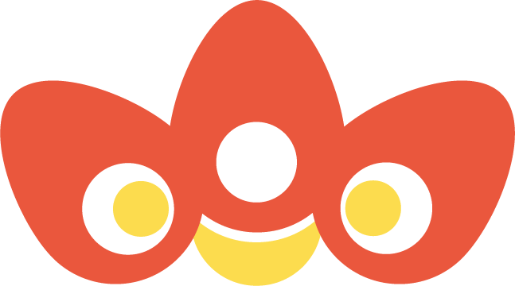
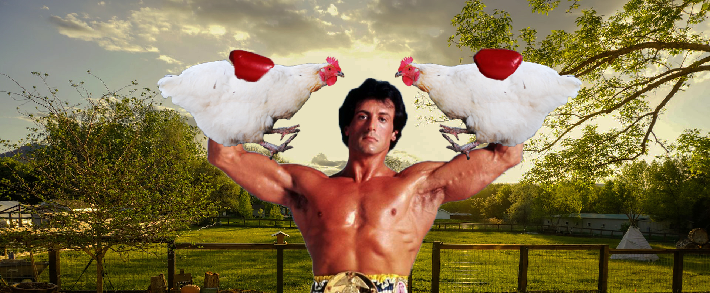

Rólunk
Termékeink
Kapcsolat
Rudi Balboa
Rudolf többszörös díjnyertes, Magyarországon tenyésztett, angol telivér szülőktől származó versenykakas, a magyar kakassport és kakastenyésztés büszkesége. Nevét a 2007. június 8-án felfedezett,
543412 Rudi
nevű aszteroida is őrzi.
Irány az ól
Live
